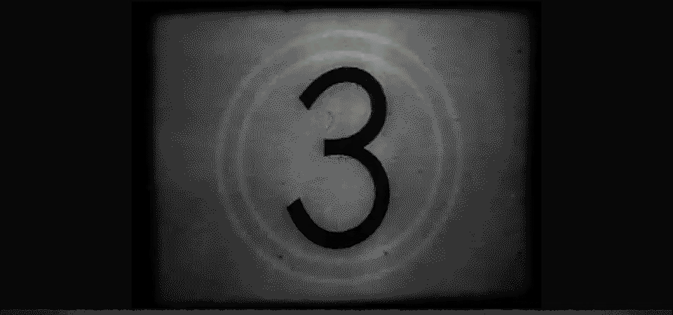

Murder At The Clocktower
I worked on this game throughout 2026. What initially started out as a group project for DES315 developed into a fully fledged game. During our time working on this game, we entered into Abertay's DARE Academy and winning the Runner Up prize for it!
Here's a video of our game! You can download it and find out more about the team on our Itch Page. You can also find out more about DARE Academy 2026 in the linked article.
Programming Responsibilities
I had a breadth of roles when working on the project. When starting this project, I began prototyping how the time travel and discovering clues mechanic would work. This expanded into finalising those mechanics, being the main UI programmer for the team, as well as working collaboratively with other members of the group to help implement their ideas and work.
This project was developed in Unreal Engine using mainly C++ with some blueprints being used as well. Some of my main programming responsibilities include:
- The time travel mechanic
- The evidence/clue system
- Designing and implementing dialogue puzzle
- Implementing UI (such as the player HUD and the Tutorial and Dialogue Puzzle system)
- Implementing the tutorial manager system
- General systems development (such as for the initial PDP system and implementing some of the clue props)
- Bug fixes. Polishes and Juice!
Project Thoughts
Working on Murder At The Clocktower gave me an appreciation for the different disciplines and roles that are required to make a game like this. Being able to work in many different areas of the game gave me an idea of which parts of game development my passion lies. My main takeaway from it was that I loved the collaboration that goes into making even a single idea a reality.
When implementing features into this game, I wanted to focus on making them as extensive as possible for designers to have an easy time messing around with them, as well as making sure the final experience was as intuitive and enjoyable for the player as possible. However, being a puzzle game meant we couldn’t just guide the player to the answers. A great amount of discussion between both designers and programmer was about designing puzzles to be easy to understand and control but tricky to solve.
I found the initial prototyping faze to be incredibly enjoyable and rewarding. Working on a small idea you have for a game and then building and improving upon it to reach a professional standard was a big part of why this project was so special. Working heavily on this UI for this project also gave me perspective as to how important it is to get the UI/UX for the game right. It was also where most of my collaboration with the other disciplines took place, implementing the great work of the talented artists and designers and being able to give it that extra bit of flare and juice is an incredible experience.
DARE was probably the most impactful learning experience of this whole project – managing and upholding a consistent schedule, showing off and discussing the game with industry mentors. We got a lot of great advice that helped shape the game. I could tell as I was working on this project, my coding standard and understanding of Unreal Engine was improving along with it. I do believe towards the end of the DARE process, there came a point where we realised we were over scoped, which unfortunately led to crunch a lack of polish in areas. However, we took this as a good learning experience for future projects.
In the end, we presented the game at the DCA in Dundee and all the stress and anxiety washes away when you see how much people enjoy the game. Winning the Runner Up prize was such a monumental feeling that I don’t think I’ll ever forget. Every member of Exotic Rats studio should feel incredibly proud of the game they made. Each one a talented artist, coming together to create something so out there and so special. I wouldn’t change anything about the group and hope to work with them, either on this project some more or on different projects, in the near future.